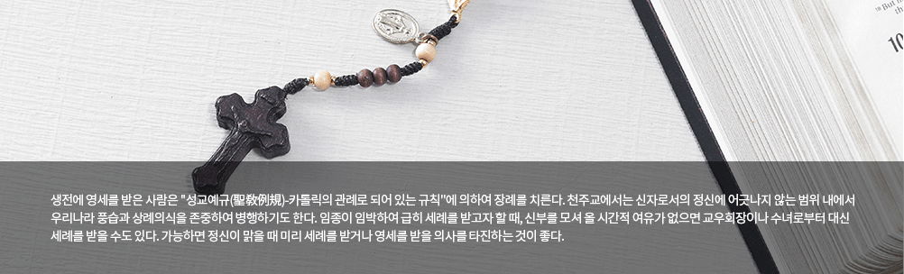

- >
- 홍보채널
- >
- 장례정보
장례정보

01. 종부성사(終傅聖事) :
- 마지막 숨을 거둘 때 행하는 성사를 종부라고 하며 의식이 있을 때 신부를 청하여 종부성사를 받는데, 오늘날에는 명칭이 바뀌어 병자성사(病者聖事)라고 한다. 이 의식을 행하기 전에 가족들은 환자의 옷을 깨끗하게 갈아 입히고 성유(聖油)를 바를 곳 즉 얼굴과 눈, 코, 입, 손바닥, 발바닥 등을 씻어 준다. 또한 상위에 흰 천이나 백지를 깔고 그 위에 십자고상(十字苦像)과 촛대, 성수그릇, 성수 채, 작은 그릇 등을 준비한다. 신부가 도착하면 상위의 촛대에 불을 밝힌 다음 신부와 환자만 남기고 다른 사람들은 모두 물러나는데, 이는 고해성사가 있기 때문이다. 고해성사가 끝나면 노자성체(路資聖體), 종부성사, 임종 전 대사의 순서로 진행한다.
- ※종부성사(終傅聖事) : 카톨릭의 칠성사(七聖事)의 하나. 중병을 앓거나 고령으로 인하여 죽을 위험에 처해 있는 신자가 받는다.
02. 임종 전 대사 :
- 종부성사는 신부가 없이 운명했을 때에도 받을 수 있는데, 이때에는 주위에 있는 사람들이 환자를 위로하고 격려하는 말을 해주고 [성서(聖書)]가운데 거룩한 구절을 골라 읽어 준다.
03. 운명(運命) :
- 환자가 숨을 거둘 때에는 성촉(聖燭)에 불을 켜는데, 성촉이란 성랍(聖蠟)으로서 신성한 용도로 쓰기 위해 보통의 것과 구별하여 말한 초를 말한다. 다음에는 임종경(臨終經)이나 성모덕시도문, 매괴경을 읽으며, 기도문은 숨을 거둔 다음에도 얼마동안 계속해서 읽는다. 환자가 마지막 숨을 거둘 때에는 떠나는 사람의 마음을 편하게 하기 위해 주위 사람들은 될 수 있는 대로 흐느끼거나 통곡하는 것을 삼가야 한다.
04. 초상(初喪) :
- 임종 후에는 깨끗한 옷으로 갈아 입히고 얼굴을 쓰다듬어 눈과 입을 다물게 하고, 손과 발이 굳기 전에 가지런히 해준다. 이때 두 손은 합장 시켜 십자고상(십자고상)을 잡고 있게 한다. 시신의 머리맡 상위에는 십자고상(십자가에 못 박힌 예수 그리스도의 수난을 묘사한 상)을 모시고 양쪽에 촛불을 켠 다음 성수그릇과 성수를 놓는데 입관할 때까지 이런 상태를 계속 유지하며 가족들은 그 옆에 꿇어 앉아 위령기도(慰靈祈禱)를 올린다.
05. 위령미사 :
- 연옥(煉獄)에 있는 사람을 위해 천주께 드리는 제사로서 연미사의 바뀐 말이다. 신도가 숨을 거두면 이 사실을 바로 본당신부(本堂神父)에게 알리는 동시에 곧 미사예물을 전하고 미사를 청한다. 그리고 장례날짜와 미사시간을 신부와 상의하여 정한다.
- ※ 연미사 : 세상에서 지은 죄로 천국에 바로 들지 못할 때, 불에 의해서 그 죄를 정화(淨化)하는 곳에 있는 사람을 위한 미사.
06. 염습(염습)과
입관(讀經) :
입관(讀經) :
- 천주교에서는 신자의 가족이면 부탁을 하지 않아도 염습에 경험이 있는 사람이 와서 고인의 시신을 알코올로 깨끗이 닦고 수의를 입힌 다음에 입관해 준다.
07. 장례식(葬禮式) :
- 장례 일에는 관을 성당으로 옮겨 위령미사와 사도예절(赦禱禮節:고별식)을 행하며 입관 및 출관과 하관은 성교예규(聖敎禮規)에 따라 거행하고 화장을 할 수 있다.
08. 하관(下官) :
- 장지에 다다르면 묘지축성 기도를 올리고 영구와 천광에 성수를 뿌린 다음에 하관 기도를 하고 하관 한다.
09. 소기(小朞)와
대기(大朞) :
대기(大朞) :
- 장례 후 3일, 7일, 30일에는 연미사를 드리고 소기(소기)·대기(대기) 때에도 연미사와 가족의 고해, 영성체를 실행한다.
- 천주교에서는 재래식 상례 중에서 신앙의 본질에 어긋나지 않는 범위 내에서 간소한 음식을 대접하거나 수시로 묘소에 찾아가 떼를 입히거나 성묘하는 것 등은 금하지 않고 있다.
※ 영성체(領聖體) : 성체(聖體)를 영(領)하는 일.